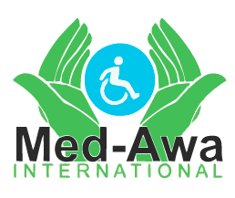
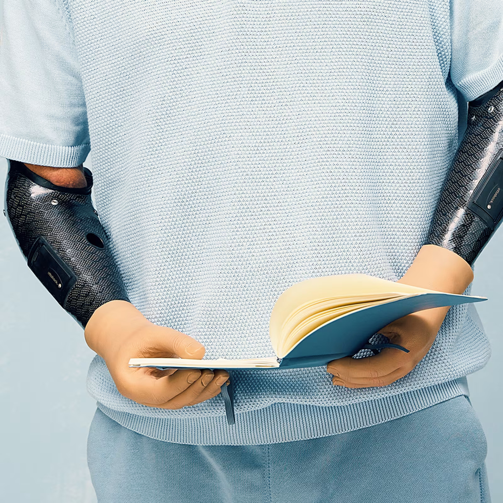
Whether you are treating pain, recovering from surgery, managing a neurological condition, or simply need everyday support — Med-Awa International has orthotic solutions for every body part and every stage of life.
From bracing and support to fully custom orthoses, our portfolio covers the spine, knee, ankle, foot, wrist, elbow, and more — designed to improve functional outcomes so patients can resume daily activities with confidence.
Browse all solutions →Orthotics — also called orthoses — are externally worn medical devices that support, align, or assist the function of a part of your body. They can help stabilise joints, correct posture, offload pressure, or assist with movement.
Orthotic devices are an essential tool for non-invasive treatment to manage injuries, chronic conditions, post-surgical recovery, and congenital differences. From a simple off-the-shelf knee sleeve to an advanced microprocessor-controlled leg brace, the range of orthotic solutions available today is extraordinary.
At Med-Awa International, our certified orthotists work closely with each patient and their care team to identify the right solution — one that fits perfectly, works effectively, and supports the goals that matter most to them.
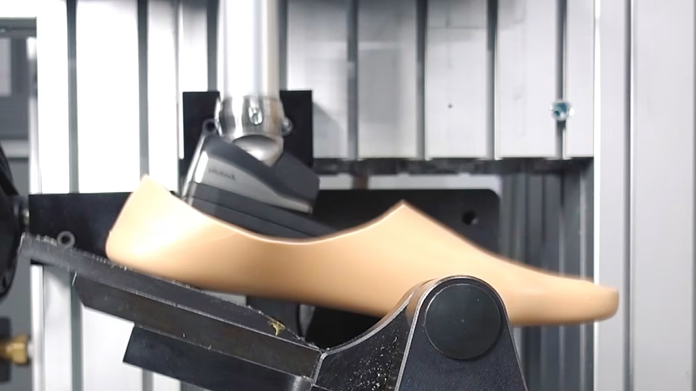
From the spine to the foot, our portfolio offers off-the-shelf bracing and fully custom-fabricated orthoses designed to improve outcomes for patients of all ages and activity levels.
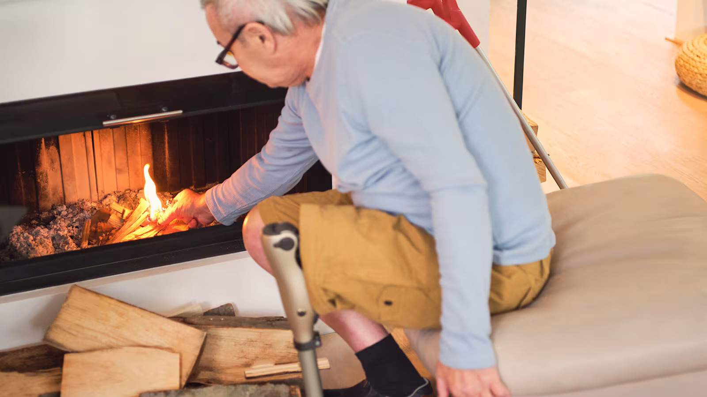
From soft supports for mild instability to rigid off-loading braces for osteoarthritis and post-surgical recovery — our knee orthoses reduce pain and restore confidence in every step.
Learn more →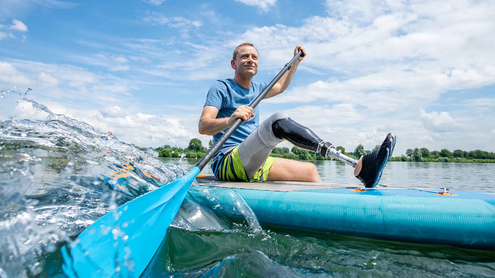
Our ankle-foot orthoses correct foot drop, support post-stroke gait, and manage conditions such as Charcot-Marie-Tooth disease. Custom and prefabricated options available.
Learn more →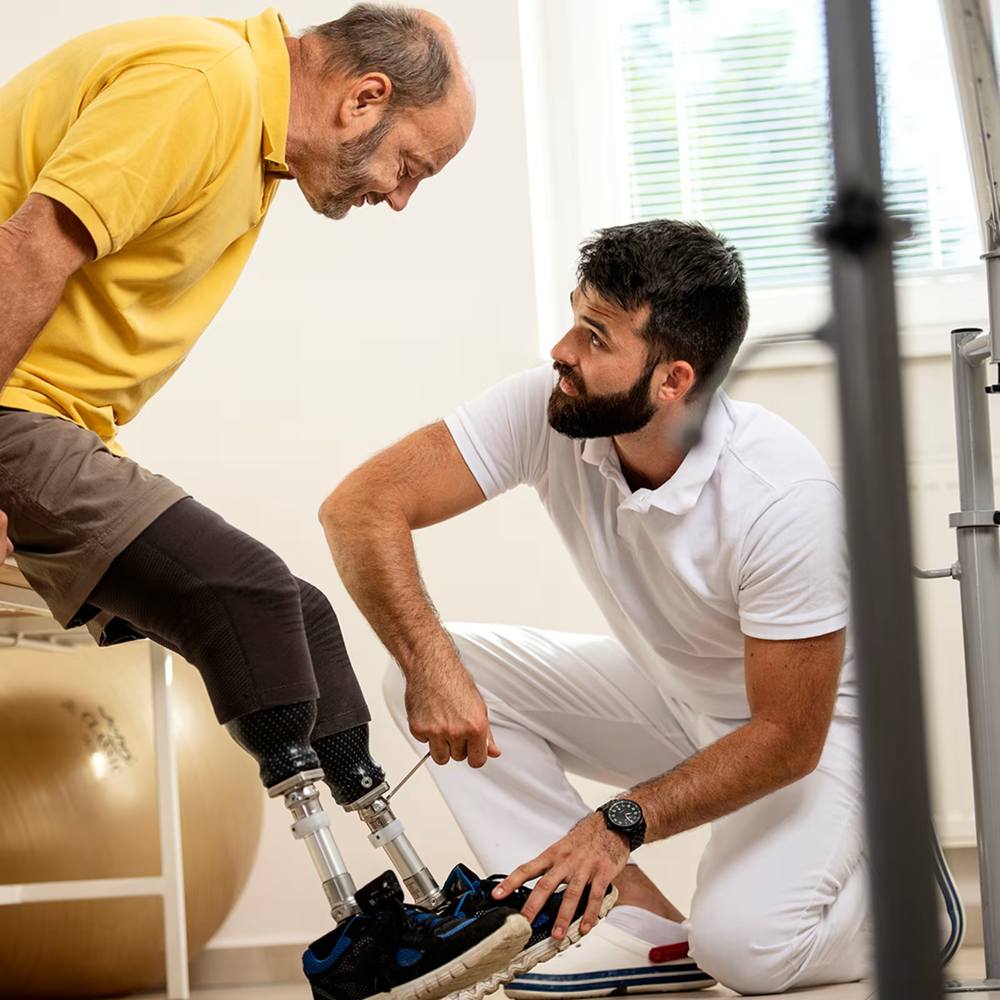
Our spinal orthoses reduce pain and improve mobility so patients can resume daily activities. Solutions span lumbar supports, TLSOs, and our patented Mechanical Advantage Pulley System for maximum stabilisation.
Learn more →Functional wrist and hand orthoses support users with neurological impairments, post-surgical recovery, and conditions such as carpal tunnel syndrome and rheumatoid arthritis.
Learn more →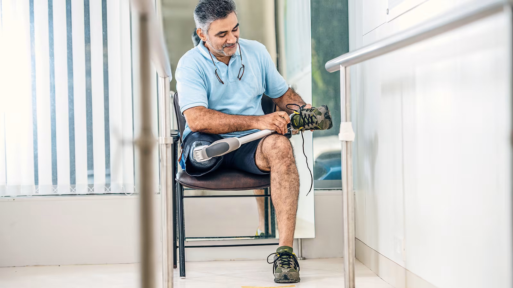
Stabilise and support the hip joint during recovery from surgery, fracture, or dislocation. Our hip orthoses are lightweight, adjustable, and designed for patient compliance and comfort.
Learn more →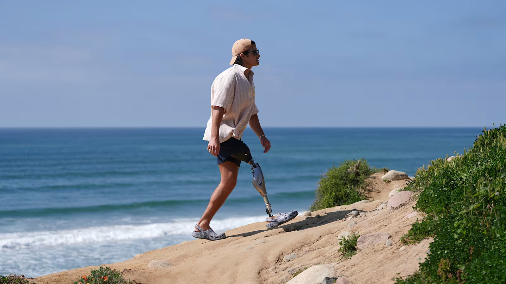
The C-Brace is the world's first microprocessor-controlled stance- and swing-phase knee-ankle-foot orthosis — revolutionising mobility for users with lower limb weakness or neurological conditions.
Learn more →From the world's first microprocessor knee-ankle-foot orthosis to proven spinal stabilisation systems, these devices set the standard for orthotic care.
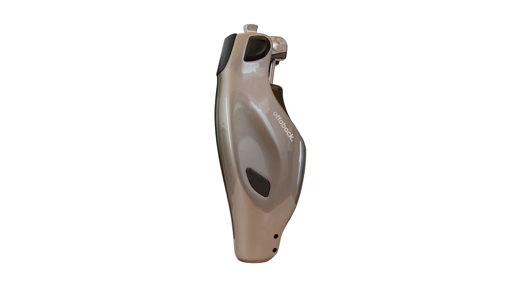
The C-Brace is the world's first microprocessor-controlled stance- and swing-phase KAFO. Its real-time sensor technology detects the wearer's movement and adjusts the orthosis accordingly — enabling a seamless, natural walking experience on any terrain, even on uneven surfaces and slopes. Life-changing for users with incomplete spinal cord injuries, post-polio syndrome, and other lower limb impairments.
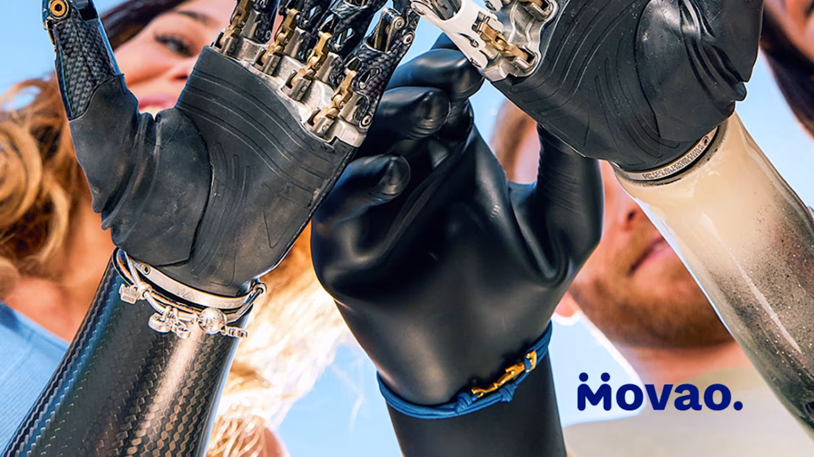
The Movao dynamic AFO provides active dorsiflexion assistance, helping users with foot drop achieve a smooth, natural gait pattern. Its lightweight carbon fibre construction and adjustable spring mechanism make it ideal for active daily use — for users with multiple sclerosis, stroke, or peroneal nerve injury.
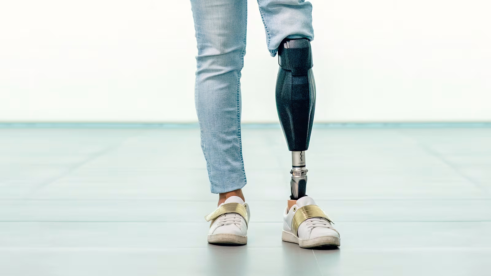
The SoftEC Genu is an off-loading knee orthosis designed to provide effective relief from medial or lateral compartment osteoarthritis. Its biomechanical three-point correction principle reduces load on the affected compartment, easing pain and improving walking confidence without surgery.
Our orthotists have experience treating a wide range of conditions. Select your condition to find the most appropriate orthotic solution for your needs.
Dynamic and static AFOs that lift the foot during the swing phase for safer, more natural walking after stroke or nerve injury.
Find a solution →Off-loading braces that reduce joint stress and relieve knee pain, helping patients delay or avoid surgical intervention.
Find a solution →Advanced orthoses for MS, incomplete SCI, post-polio, and cerebral palsy that support walking function and independence.
Find a solution →Immobilising and functional orthoses to protect surgical repairs and support controlled rehabilitation after joint surgery.
Find a solution →Custom spinal bracing systems for idiopathic scoliosis in children and adolescents — designed for compliance and effectiveness.
Find a solution →Functional bracing for ligament injuries, patellar instability, and ankle sprains — keeping athletes active during recovery.
Find a solution →Lightweight, adjustable orthoses for children with clubfoot, flat feet, developmental delays, and other paediatric conditions.
Find a solution →Total contact casting and offloading orthoses to protect the diabetic foot, reduce ulceration risk, and support healing.
Find a solution →Med-Awa offers both custom-fabricated and prefabricated orthotic solutions. Our orthotists will guide you to the right choice based on your diagnosis, goals, and lifestyle.
Individually designed and built from a cast or 3D scan of your body. Ideal for complex conditions, unusual anatomy, or when a precise fit is essential for clinical outcomes.
Ready-made orthoses available in standard sizes for common conditions. Suitable for mild to moderate conditions, acute injuries, and post-surgical support.
Every orthosis is fitted to the individual. Our certified orthotists guide you through every step — from your first appointment to long-term follow-up care.
Your doctor or specialist refers you to our orthotist, who conducts a thorough clinical assessment of your condition, functional goals, and lifestyle needs.
We identify the right orthotic solution for you — custom or prefabricated — and explain the options clearly so you can make an informed choice.
Custom orthoses are cast or scanned and fabricated in our lab. All orthoses are carefully fitted, aligned, and adjusted for comfort and function.
We ensure you know how to use and care for your orthosis and schedule follow-up appointments to monitor progress and make any necessary adjustments.
Real experiences from patients whose lives have been transformed by Med-Awa orthotic solutions.
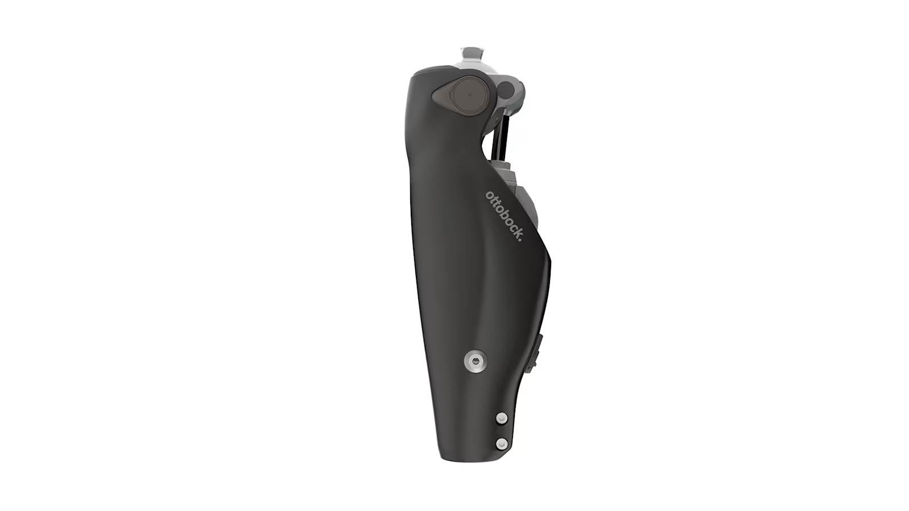
"After my spinal cord injury I thought walking was behind me. The C-Brace from Med-Awa proved otherwise. I can now walk unaided in my home and around the neighbourhood. It has transformed my independence completely."
"I was told I needed a knee replacement. My orthotist at Med-Awa fitted me with the SoftEC Genu knee brace and within weeks the pain reduced dramatically. I am back to walking my dogs every morning."
"After my stroke I had severe foot drop and could barely walk safely. My Movao AFO from Med-Awa lifted my foot with every step — within three months I was walking to the shops again independently."
39 Honey Drive, Belvedere, Harare, Zimbabwe.
Walk in or call ahead — no referral needed for a free initial orthotic assessment with our certified orthotists.
📞 +263 86 4428 7874
📱 +263 77 613 3202 | +263 77 421 9190
✉️ medawainternational@gmail.com
Complete the form below and a Med-Awa orthotist will contact you within 24 hours to discuss the best orthotic solution for your condition and lifestyle.
📍 39 Honey Drive, Belvedere, Harare | 📞 +263 86 4428 7874 | ✉️ medawainternational@gmail.com